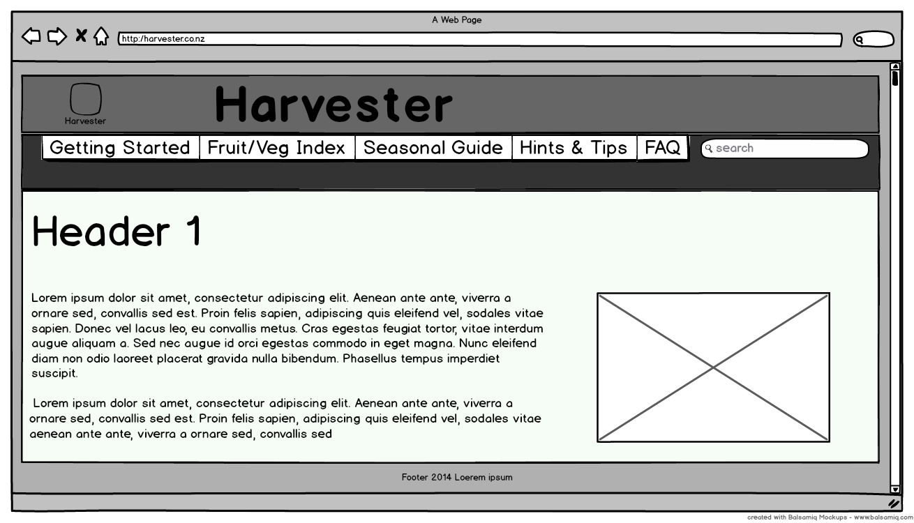

Task 1:

The home page is called index.html. Clicking on the logo in the top left takes you to the home page. Every page contains a navbar that can navigate to all the sections. Every page also has a search bar.
Upon finishing the Getting Started quiz the user redirects to a results page. Clicking on Tomatoes in the Fruit/Veg Index takes you to the plant description page.
Font scheme:
The font family used in my site are Gill Sans, Gill Sans MT. I decided to exclusively use this font throughout the site as I felt adding other fonts was unnecessary and using one would make it more consistent. I felt that the font was legible and easy to read while still being aesthetically pleasing. The font seemed lightweight and had a nice balance of curves, height and weight. It also looked good in various sizes. The font was sans-serif and used proportional spacing. These characteristics seemed suitable for a web page font. I attempted to use size to differentiate between body text, headers and links.
Colour scheme:
I used monochromatic colour scheme with a light background for my website. This included different shades and tints of green since gardening is a central theme of the site. However I didn't want to overuse the green and make the screen tiring on the eyes hence the use of light colours such as white and grey. For the title I used a dark green background with white font. This is a inverse of the body colour scheme and I used it for it's high contrast and to show emphasis. The navbar is a different green to separate it from the title. When a link in the navbar is hovered over or selected, the text colour changes to green and the tab background changes to the body colour. This is to show feedback and give a sense of the page being a part of the tab. The body text and button colour match with the title background while the background for the body is a very light monochromatic tint of green. The footer colour is grey which was chosen to give it a visual separation from the body. I feel that this colour scheme provides a harmonious and consistent feel throughout the site while still having contrast for readability.

*Note-I couldn't find the exact colours that I used in my site for the designeye.
Lines and borders scheme:
I decided to implement lines and borders that reflect and match my websites design. Hence the use of thin hairline borders with the same colour scheme as the rest of the page. I feel that this matches with the fonts colour and thickness. The navbar also has a light border around each tab to distinguish one from another. I also have horizontal lines in the body to group content and separate different sections. To make the site appear less boring, I used curved tabs,buttons and a rounded search bar while also having a curved edge in the logo. I decided not to completely overload the site with curves, opting for a mixture of edges and curves. This mixture also reflects on my chosen font. Background was kept simple with a very light tint of green colour to provide plenty of white space.
Design Assumptions:
For the design I chose to implement the home page, a getting started page that leads on to a results page and a vegetable index page. The welcome page briefly explains the sites purpose and can be navigated to by clicking on the 'H' logo on the top left.In the getting started page, the questionnaire remembers your choices and displays them in the results page, however the content following after that is the same regardless of what options you picked. The search bar returns the same page regardless of what you type. In the vegetable index, potatoes is the only link that I integrated. In the interest of time I could not implement every page and all the functions. I focused on the getting started section and the vegetable index. In a actual implementation the getting started questionnaire would have more questions and vegetable index would have the recommended plants shown at the top of the screen based on your selections. It would have also been ideal to have filters such as seasons or indoor/outdoor for the index. Due to time constraints and the need for things out of the scope of this assignment these had to be left out. For usability testing, the users goal is to head over to 'Getting Started' and answer a few questions about their garden. Upon submitting they are shown a result page recommending what they should plant and how they should set up their garden. The other goal is to navigate to the 'Fruit/Veg Index' and look for a particular vegetable in this case tomatoes. The website is optimised and tested on the compsci lab computers.